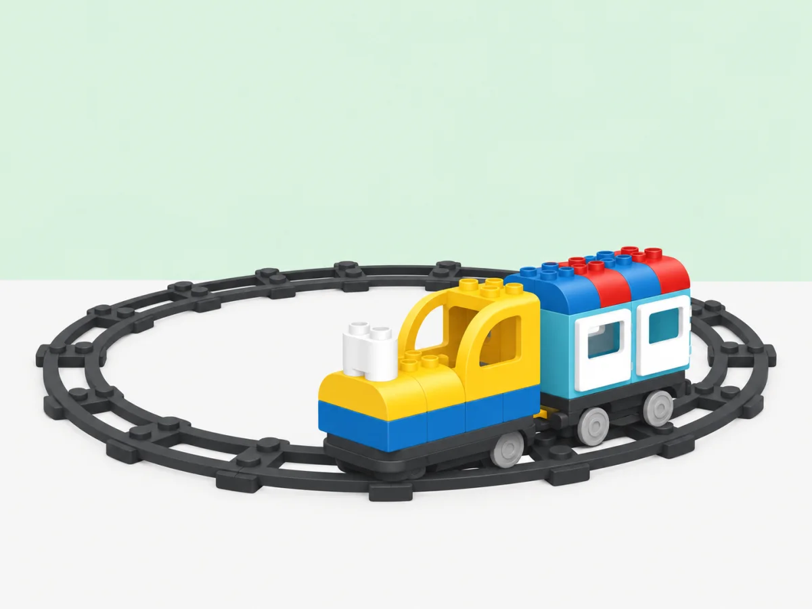

El bucle ferroviari: repetir un recorregut
Explorar la repetició amb una via tancada, fer prediccions i comparar el bucle físic amb una seqüència d’accions.
🎯 Repte
La biblioteca mòbil ha de visitar tres parades i tornar a començar la ruta perquè hi puguin pujar nous lectors. Com podem fer que repeteixi el mateix recorregut i com podem demostrar que ha completat una volta?
🖼️ Abans de començar

Aquesta activitat parteix de la idea de repetició que LEGO Education treballa amb la via en forma d’O, però planteja un repte nou: organitzar un servei de biblioteca amb torns i parades. Les instruccions, el relat i la imatge d’aquesta pàgina són propis. Consulta la lliçó oficial sobre vies en forma d’O i bucles per contrastar-ne la proposta.
🧰 Material
- Tren Coding Express i trams de via corbs i rectes per construir un circuit tancat.
- Tres estacions amb noms o pictogrames inventats per la classe.
- Fitxes de passatgers i una targeta de registre per comptar les voltes.
- Llapis de colors per dibuixar la ruta abans de construir-la.
Comprova que el tren, les vies i les peces d’acció del kit disponible funcionen. Coding Express està retirat comercialment; aquesta proposta és per als centres que ja disposen del conjunt.
👣 Pràctica pas a pas
1. Representar una rutina repetida
Abans de muntar les vies, ordeneu tres accions que es repeteixen en una visita a la biblioteca: pujar, triar un conte i tornar-lo. Una parella representa la seqüència; la resta indica en quin punt torna a començar.
2. Dissenyar la línia
Dibuixeu una ruta amb una sortida, tres estacions i un tram que retorni al punt inicial. Munteu-la amb el tren aturat i comproveu que les unions no deixin cap tall ni forcin les peces.
3. Predir i provar
Abans d’engegar, cada equip posa els passatgers a les estacions que vol visitar i prediu l’ordre en què el tren hi passarà. Feu una prova sense càrrega; després activeu el tren i anoteu quantes vegades passa per cada estació.
4. Comparar amb una ruta oberta
Si el material ho permet, construïu també una via amb inici i final diferents. Compareu què passa en arribar al final de cada disseny. Expliqueu amb paraules, gestos o dibuixos quina estructura permet que el recorregut torni a començar.
5. Millorar el servei
Afegiu una parada o canvieu la posició d’una estació. Repetiu la predicció i comproveu si tots els passatgers poden pujar sense aturar el tren en un lloc insegur.
🔎 Preguntes per guiar la conversa
- Quina part del recorregut es repeteix? On torna a començar?
- Com sabem que el tren ha fet una volta completa?
- Si afegim una parada, quina part del pla hem de revisar?
- Una via tancada és el mateix que un bucle en un programa? Què comparteixen i què no?
♿ Suport, extensió i seguretat
Per a una primera prova, feu una volta amb només dues estacions i una persona que assenyali el punt de retorn. Es pot participar movent passatgers, ordenant targetes o registrant voltes sense manipular el tren. Com a extensió, compareu dues rutes que visiten les mateixes parades en ordres diferents i justifiqueu quina és més clara per als viatgers.
Munteu les vies en una zona delimitada i manteniu els dits fora del mecanisme mentre el tren es mou. Atureu la locomotora abans de canviar vies o peces d’acció.
✅ Evidències d’aprenentatge
- Un esbós que mostra les estacions i el punt on el recorregut torna a començar.
- Una predicció de l’ordre de les parades i un registre del que ha passat.
- Una explicació que distingeix el cicle de la via d’una repetició escrita en un programa.
Per transferir-ho: demana a cada infant que identifiqui una rutina diària que torna a començar i la representi amb tres imatges en cercle.